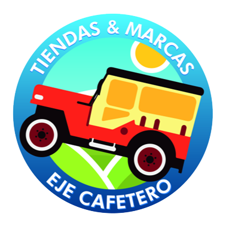
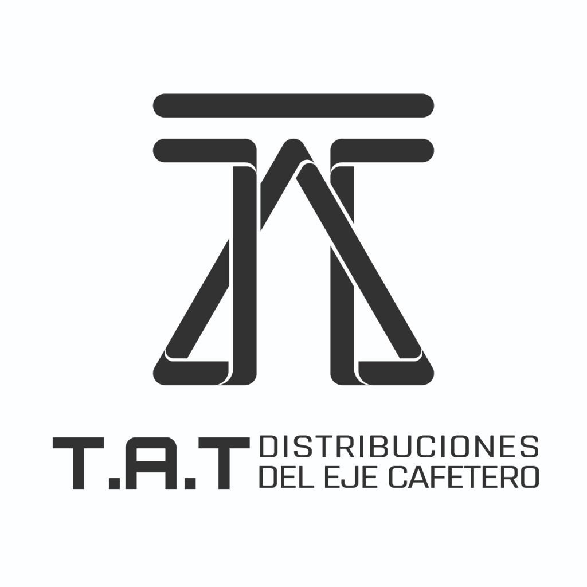

Ecosistema Digital TYM / TAT · Resumen Ejecutivo de Impacto y Ahorro · 2026
| Desarrollo | Problemática Anterior | Solución Implementada | Impacto Operativo | Ahorro |
|---|---|---|---|---|
| FletesApp | Valores modificables manualmente, sin control por población. Cajeras dependían de logística para solicitar planillas. | Tarifas restringidas por población, adicionales con justificación obligatoria y planillas en tiempo real. | Control financiero, trazabilidad y flujo de información inmediato entre áreas. |
$20.669.130 (Nov-Dic 2025) → $14.070.840 (Mar-Abr 2026) −31,92% Ahorro $6.598.290 TAT: $6.549.800 acumulado · $1.637.450/mes |
| DevolucionesApp | Poco control sobre devoluciones de auxiliares y dificultad para analizar motivos. | App con historial, estadísticas automáticas y reportes para toma de decisiones. | Identificación de patrones de devolución y mejor control operativo. |
$221.753.790 (5,00%) dic 2025 → $125.896.095 (2,40%) feb 2026 −43,23% Reducción $95.857.695 |
| ConsigControl | Proceso en papel con una persona dedicada exclusivamente a escanear consignaciones. | Registro digital con detección de duplicados y descarga masiva de comprobantes. | Eliminación del proceso manual, reducción de papel y validación inmediata. |
1 SMMLV/mes por automatización ~3.000 hojas menos al mes · $150.000–$300.000 en papel e insumos |
| Control de Canastas | Pérdidas de canastillas sin trazabilidad por ruta. Planillas físicas que se extraviaban en el muelle. | Registro de despacho vs retorno por viaje, con firma digital y kardex en tiempo real. | Trazabilidad completa de los 4 tipos de envase entre bodega, rutas y clientes. | +250 u/mes → 0 pérdidas de canastillas, eliminando el costo de reposición. |
| InventApp | Conteos en hojas físicas con digitación manual posterior y discrepancias crónicas de stock. | Conteos asignados por operario, diferencias automáticas y actas en PDF sin digitación. | Precisión 88,2% → 99,4%. Toma física de 7 h reducida a 2 h. | Eliminación del conteo a mano y del registro en papel. Menor tiempo operativo en cada inventario. |
| Portal Tributario | Más de 600 solicitudes mensuales de certificados por correo y teléfono al área contable. | Autoservicio 24/7: el usuario ingresa su NIT y descarga el certificado en segundos. | Cero llamadas y correos para entrega de certificados. | Sin papel en la distribución de certificados. Contabilidad descarga sus propios reportes desde la plataforma. |
| GH PRO | Asistencia en libros físicos, vacaciones en papel, sin control de dotación ni visibilidad de horas extras. | QR de asistencia, portal de vacaciones, módulo de dotación y seguimiento de horas extras. | Todo en un solo lugar: asistencia, vacaciones, dotación, horas extras, incapacidades y certificados. | Cero formatos físicos. Reducción de tiempo del área de RRHH en gestión manual para más de 150 colaboradores. |
| AppIndicadores | Seguimiento verbal o en hojas sueltas, sin trazabilidad ni histórico de cumplimiento. | Dashboard de cumplimiento de tareas por colaborador, área y período en tiempo real. | Los líderes identifican quién cumple y quién no con datos concretos y actualizados. | Reuniones de seguimiento basadas en datos reales. Mayor cumplimiento por visibilidad constante del desempeño. |
| Zeentra Alpina | Múltiples archivos Excel desactualizados y sin consolidar. El cubo de ventas colapsaba los equipos. | Dashboard único con toda la información comercial y asistente de IA para consultas. | Análisis de días reducido a minutos. Desvíos detectados el mismo día. | Sin trabajo manual en Excel ni archivos dispersos. Todo el equipo consulta desde una sola plataforma. |
| ZenUp (Cambios Zenú) | Talonarios físicos con precios desactualizados y errores en equivalencias de productos. | Catálogo digital con precios automáticos y cálculo exacto de cambios en tiempo real. | Visita de 12 min → 3 min. Efectividad de cobro 81,5% → 99,8%. | Reducción de pérdidas por errores de precio y más visitas efectivas por jornada. |
| WEB-T-M-TAT | Sin presencia digital. Consultas de catálogo atendidas manualmente por teléfono. | Portal con catálogo multimarca y asistente de IA que responde consultas automáticamente. | 85% de consultas resueltas sin intervención. Captación de clientes +140%. | Posicionamiento de la empresa en internet con mayor visibilidad en búsquedas. Las automatizaciones dentro de la página atienden clientes sin intervención humana, generando presencia y captación continua sin costo adicional. |